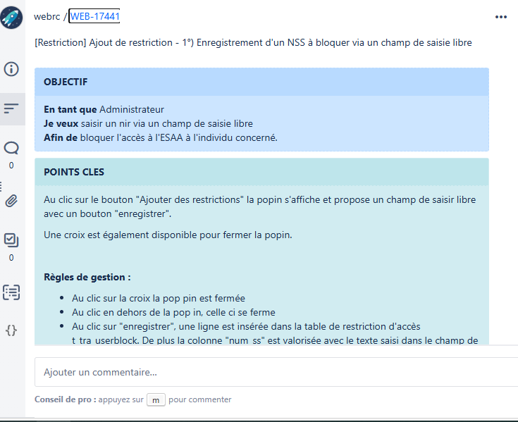
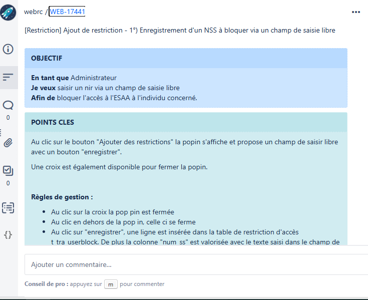
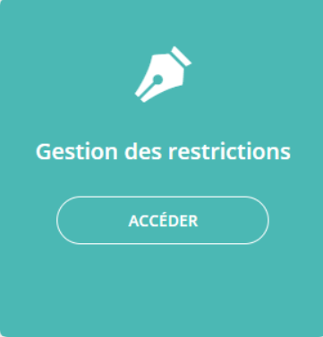
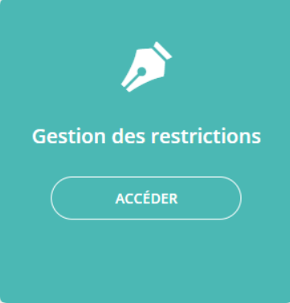

La veille technologique est un processus essentiel permettant d’identifier et d’analyser les évolutions et innovations d’un secteur. Elle aide à anticiper les tendances et à adapter ses compétences aux nouvelles exigences du marché.
Dans le cadre de ma formation, j’ai mis en place une veille structurée pour suivre les avancées en intelligence artificielle appliquée au développement logiciel. L’objectif est de comprendre comment ces nouvelles technologies influencent la manière dont les applications sont conçues et optimisées.
📌 Organisation de ma veille
Pour collecter des informations pertinentes, j’utilise plusieurs sources et outils. Tout d’abord, Feedly
, un agrégateur de flux RSS, me permet de centraliser les articles et actualités de sites spécialisés comme OpenAI Blog, Towards Data Science et GitHub Blog. Je complète cette veille en consultant les tendances et discussions d’experts sur LinkedIn et Twitter (X), ainsi qu’en m’abonnant à des newsletters spécialisées comme AI Weekly et The Algorithm (MIT Technology Review).
Une fois les informations collectées, je les trie et les analyse pour conserver uniquement les éléments les plus pertinents. J’organise cette veille à l’aide de Notion et Google Drive, où je classe les articles, études et analyses en différentes catégories. Chaque semaine, j’effectue une synthèse en y ajoutant mes propres observations et des captures d’écran des tendances clés.
📍 Thème de la veille : L’intelligence artificielle et le développement logiciel
Le domaine du développement logiciel est profondément impacté par l’intelligence artificielle. De nouvelles solutions, comme GitHub Copilot et ChatGPT, modifient la façon dont les développeurs travaillent au quotidien. Ces outils permettent d’accélérer la production de code, de réduire les erreurs et d’optimiser le débogage.
Cette veille se concentre sur plusieurs aspects majeurs :
📌 Automatisation et assistance : L’IA facilite la génération de code en s’appuyant sur des bases de données massives de projets open source. Des outils comme GitHub Copilot, basé sur OpenAI Codex, aident à l’écriture et à la correction du code en temps réel.
📌 Avantages et limites : L’IA permet un gain de temps considérable, améliore la productivité et facilite l’apprentissage pour les développeurs juniors. Cependant, des limites existent, notamment en termes de fiabilité du code généré, de dépendance aux outils et de questions de sécurité liées aux données traitées.
📌 Impact sur le rôle du développeur : L’intégration de l’IA redéfinit les missions des développeurs. Plutôt que d’écrire du code ligne par ligne, ils doivent désormais adopter un rôle de superviseur et d’optimisateur, en validant et en améliorant les propositions faites par l’IA.
📌 Exemples concrets : GitHub Copilot, qui accélère la production de code en proposant des complétions intelligentes, et ChatGPT, utilisé pour répondre à des questions techniques, expliquer des concepts et aider au débogage.
📌 Conclusion
Grâce à cette veille, j’ai pu approfondir ma compréhension de l’évolution du développement logiciel face à l’essor de l’intelligence artificielle. Si ces outils ne remplacent pas les développeurs, ils deviennent des alliés puissants, permettant de travailler plus efficacement et de se concentrer sur des tâches à plus forte valeur ajoutée.
Dans un monde en constante évolution, il est essentiel de se former en continu et d’adapter ses compétences pour tirer le meilleur parti de ces avancées technologiques.

 

 



{kind=link}
{kind=link}
{kind=link}
{kind=link}
{kind=link}